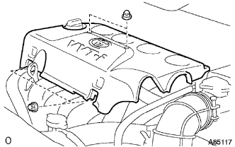
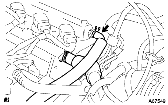
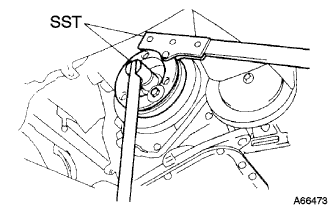

オイルポンプASSY 取り外し |
| 1. バッテリマイナスターミナル切り離し |
| 2. フロントタイヤRH取りはずし |
| 3. シリンダヘッド カバー NO.2取りはずし |
|  |
ナット4個をはずし、シリンダヘッドカバーNo.2を取りはずす。
| 4. イグニッション コイル NO.1取りはずし |
イグニッションコイルのコネクタおよびボルトをはずし、イグニッションコイル全数を取りはずす。
| 5. ベンチレーション ホース切り離し |
|  |
ベンチレーションホース切り離す。
| 6. ベンチレーション ホース NO.2切り離し |
ベンチレーションホース No.2を切り離す。
| 7. シリンダヘッド カバーSUB-ASSY取りはずし |
 |
ボルト9本およびナット2個をはずし、シリンダヘッドカバーを取りはずす。
| 8. ファン ＆ オルタネータ Vベルト取りはずし |
 |
調整用ボルトAおよび固定用ボルトBを緩める。
Vベルトの張力を緩めてVベルトを取りはずす。
| 9. オルタネータASSY取りはずし |
 |
ターミナルキャップを取りはずす。
コネクタおよびハーネスクランプを切り離す。
ナットをはずし、B端子ターミナルを取りはずす。
 |
ボルトAおよびナットをはずし、ファンベルトアジャスティングバーを取りはずす。
 |
固定用ボルトBをはずし、オルタネータを取りはずす。
| 10. エンジンアンダ カバー RH取りはずし |
ボルト2本およびスクリュ2本をはずす。
ナットをはずし、エンジンアンダーカバーRHを取りはずす。
| 11. エンジン オイル抜き取り |
| 12. 冷却液(トヨタ純正スーパーLLC)抜き取り |
ラジエータキヤツプを開ける。
ラジエータドレーンコツクプラグをゆるめ冷却液を抜き取る。
| 13. ベーンポンプVベルト(パワステベルト)取りはずし |
 |
固定用ボルトAおよび調整用ボルトBをゆるめる。
Vベルトの張力をゆるめてVベルトを取りはずす。
| 14. ウォータポンプ プーリ取りはずし |
ＳＳＴを使用して、ウオータポンププーリを固定する。
 |
ボルト３本をはずし、ウォータポンププーリを取りはずす。
| 15. ウォータ ポンプASSY取りはずし |
 |
ボルト３本およびナット２個をはずし、ウォータポンプＡＳＳＹを取りはずす。
| 16. エンジンマウンティング インシュレータSUB-ASSY RH取りはずし |
 |
木片などを介して、ジャッキでエンジンを支える。
 |
ボルト5本およびナットをはずし、エンジンマウンティングインシュレータＲＨを取りはずす。
| 17. エンジンマウンティング ブラケット RH取りはずし |
 |
ボルト4本をはずし、エンジンマウンティングブラケットＲＨを取りはずす。
| 18. クランクシャフト ダンパSUB-ASSY取りはずし |
No.1シリンダ圧縮上死点セット
 |
クランクシャフトダンパを正回転させ、合わせマーク（切り欠き）をチエーンカバー0°の位置に合わせる。
このとき、カムシャフトタイミングギヤの合わせマークが図の位置にあることを確認する。
ジヤッキを操作し、エンジンフロント側を下げてSSTがセットできる位置にする。
|  |
SSTを使用してクランクシャフトダンパを固定し、ボルトを取りはずす。
クランクシヤフトダンパを取りはずす。
| 19. クランクポジション センサ取りはずし |
 |
コネクタを切り離す。
ボルトをはずし、クランクポジシヨンセンサを取りはずす。
| 20. カムシャフトタイミングオイルコントロール バルブASSY取りはずし |
カムシヤフトタイミングオイルコントロールバルブのコネクタを切り離す。
ボルトをはずし、カムシヤフトタイミングオイルコントロールバルブを取りはずす。
| 21. オイル ポンプASSY取りはずし |
 |
ボルト15本およびナットを取りはずす。
 |
保護テープを巻いたマイナスドライバーを使用して、オイルポンプＡＳＳＹをこじて取りはずす。
| 22. オイルポンプ シール取りはずし |
 |
保護テープを巻いたマイナスドライバーを使用して、オイルシールを取りはずす。